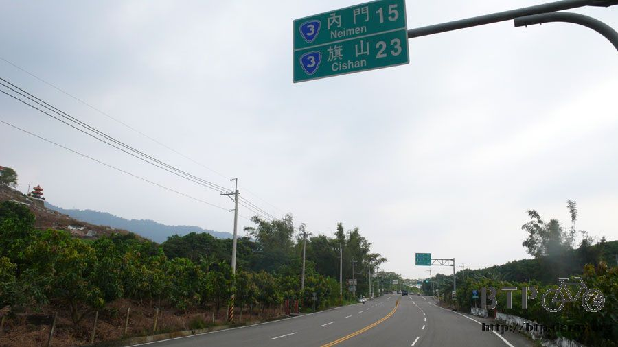
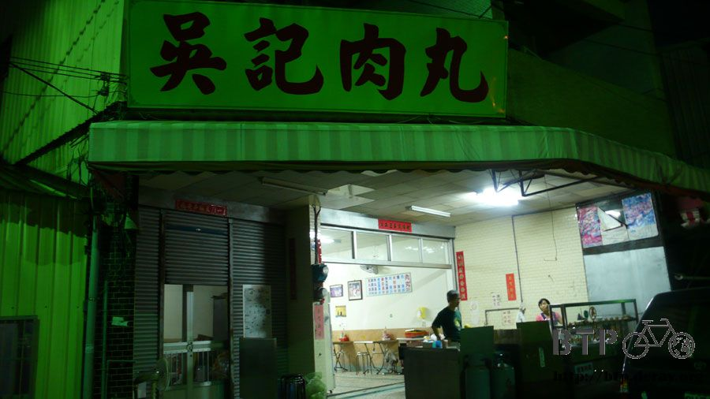
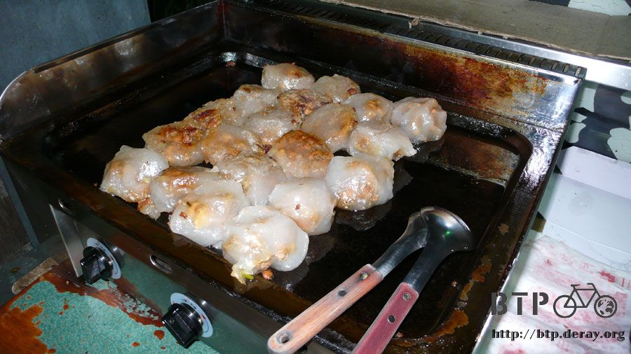
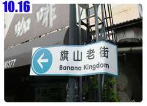

小路彎彎
大概快三點的時候稍微睡著一下子，好景不常，四點半不到就有老伯開車來上班，拉開鐵門的時候理所當然的被我嚇了一跳。
總計睡眠時間不到兩個小時，還不到五點，天色昏暗不明。
連續第二個晚上睡不好了，越睡越累，全身筋骨酸痛，有種生不如死的感覺，好像不在旅行，而是在活受罪。
老伯伯開門之後，倒了杯熱開水給我喝，大概覺得我睡在外面很冷，其實我整個人熱的要命，白天曝曬在太陽下所遺留的溫度還沒散去。
之後自己進去館內，灌了好幾杯的冰開水，坐在椅子上想補睡一下，可是依然不得安眠，只好睜著眼皮等天亮。

竹崎游泳池的員工上班來那麼早也有好處，減少我在地上受罪的時間，待在房子裡頭還是比待在外面來的舒適。
五點半過後天色漸漸亮了起來，依然沒有鏡子可以看自己現在的臉色有多慘，今天無論如何一定要好好睡上一覺。
目的地是高雄縣的旗山，目前所在位置還在嘉義縣，走台三線跑到山裡玩，經過台南縣然後到高雄縣，大概也要一百三十公里。
想說早一點出發就可以早一點抵達，早一點抵達就可以早一點休息，精神很差的緣故，騎起車來感覺更沒勁，
還好今天太陽小很多，一大清早出發很涼快，找一間早餐店吃點三明治，有體力才騎得動車。
省下那麼多的住宿費用，就算天天吃牛排也划算，但這樣下去會越來越胖，還是別吃的太猖狂才好。
這條溪的名字很有名，大概所有人都聽過吧。

沒有想過自己會騎經這條溪，不知道是同名而已，還是真的是那條傷心的河流。
本來以為昨天騎南投山區是這段旅行中爬山爬最多的一段路，其實不然，今天爬的山路比起昨天一點也輕鬆不到哪裡去。
選擇台三線固然很清幽，風景壯麗還可以經過一座很有名的曾文水庫，代價很簡單，只要騎得動車就可以到。
關子嶺印象中都是會辦團康露營活動的地方，曾文水庫則只從小學課本中讀過而已，這次環島可以拜訪好多只有模糊概念的鄉鎮。
台三線再度出現，每一個地方的距離都不會很遠，看起來還蠻輕鬆的，只是沒想到這一路上都是爬坡的山路。
居然有一個地方叫『分水嶺』，還以為這是地理上的一個名詞，居然也是個地名。
等騎到分水嶺之後才知道那邊不是個鄉鎮，說不定真的就是一個分水嶺而已。
這幾天都沒有睡好，精神很不濟，如果現在讓我騎平坦筆直的道路，一定會打瞌睡摔車，結果現在騎在蜿蜒陡峭的山路上，
腳要不停的重踩踏板，表情咬牙切齒，根本就不可能打瞌睡，好幾度又有腳抽筋的感覺，怕抽筋久了會變成習慣，
配合適度的休息比較輕鬆，這幾天下來，雙腿居然有鐵腿的現象，騎車感覺不出來，走路的時候兩隻腳簡直不是自己的，走一步痛一步。
還好今天太陽很收斂，正好可以舒緩被曬傷的皮膚，趁現在先塗防曬油，都已經曬傷了才塗，有點於事無補，但至少不會再惡化下去。
進入山區沒多久就瀰漫著淡淡的霧氣，直到山中起大霧為止，今天的景色非常的虛幻。
偶爾會經過一些短短的小隧道，牆面上佈滿了青苔，上頭也不停的有水滴下來，感覺就是年代很久遠的隧道。
雖然在漏水，但應該不會垮掉吧？
汗流不止的情況下，水壺的水消耗得很快，看著路邊的山泉水都很想去裝來喝，經過隧道的時候也想張開嘴巴去接這些水止渴。
一開始不知道今天的路有多難搞，只覺得最難的南投部分已經結束，接下來應該會輕鬆很多，結果一點也不是這麼回事。
看看這個，連續彎路六十六公里，是不是這麼長呀？
還好不是連續上坡，但也相去不遠了，真是騎到讓我想哭都沒眼淚，還好爬坡之後一定會有下坡，辛苦總會有代價的。
路邊的狗很多，家裡養的跟流浪狗都有，大概有五成的機率會撲上來追著我跑。
通常來說，被養在家裡面又用鐵鍊栓起來的狗，看到我經過就會猛吠不止，我就會跟那隻狗說『來咬我呀～笨蛋』
而有用項圈的狗，但是卻沒有栓起來，就表示他是有主人的，通常脾氣也不是很好，會吠更會追著我跑。
等我跑贏牠們之後，也會烙下一句『就憑你？回去再練個十年吧～』
流浪狗則是脾氣最好的，三三兩兩結隊活動，可是不會追著我跑，大概被人遺棄，又受過辛苦的流浪生活，心裡有些怕人吧。
除了狗之外，今天還看到籠子裡有不一樣的動物，居然是台灣獼猴耶？
籠子就放在馬路旁邊，一顆曼陀羅樹的正下方，台灣獼猴不是保育類的動物嗎，居然被養在這裡。
而且牠很激動，一直高分貝的尖叫，然後用身體衝撞籠子，趁牠累的時候靠近一看，猴子打哈欠，裡頭的牙齒跟老虎一樣又尖又長。
越進入山裡霧氣越濃，天氣再怎麼涼快也還有個二十五度以上，這樣也好，渾身汗濕的情況下如果又吹風又低溫的話，那沒兩下就掛點了。
很酷的告示牌。
這段路的車超級少的，台灣西部道路錯綜複雜，可以選擇的路線很多，所以車流都被分散到比較好走的路去。
像這樣的山路幾乎沒有人會走，除非是來玩的或是買名產，騎重機或是小綿羊的也幾乎消失了。
明明是自己跑到山裡面去，但卻有一種錯覺是，全世界的人都躲起來跟你玩捉迷藏，怎麼都沒人呀？
喘氣爬著山路，很快的就騎到可以鳥瞰山勢的高度，因為起霧的關係，遠一點的地方就是白茫茫的一片。
看著自己一路爬上來的路，以當時的心境來講，如果叫我重新爬一次，那真的是寧死不屈。
路旁偶爾出現掉落的碎石或是林木都不以為意，但是看到路基流失導致道路塌陷的時候，還是緊張了一下。
本來的雙線道變成單線道，看起來這麼恐怖的地形，居然還有怪手在底下施工，實在是勇者才敢在這樣的環境下工作。
再次對這些在惡劣地形跟天候下，冒著危險搶通道路、恢復電力供應的勞工朋友們說聲謝謝，你們辛苦了。
基本上到處都長滿了樹，不然就是把樹砍了改種經濟作物，很難得看見裸露的地形。
這一小段正好是岩壁，歷史堆積的紋理和造山運動的痕跡清清楚楚的攤在眼前，努力一點找說不定能發現貝殼化石呢。
曾文水庫是長方形的，南北長、東西窄，沿著台三線會從許多不同的角度欣賞這座翠綠的大水庫。
水庫裡的水非常非常的綠，不是因為陽光或是反射的緣故，它就是確確實實綠色的水。
是因為水質被污染了嗎？
不知道水庫的水能不能喝，還是只能當作水力發電，無論如何，這邊實在太漂亮啦～
沒機會去長江三峽，要是可以在曾文水庫划個小船我也很滿意。
因為起霧的緣故，照片拍起來都很模糊，就當作是朦朧美吧。
這邊就非常的不缺水，在沒有東西當比例尺的情況下，感覺不出水庫有多大，看起來還比較像積水的山溝。
如果能同時顧到環保的維持以及增加觀光客，那麼就能同時帶動地方的發展，也能讓更多人欣賞到台灣美麗的一面。
當然前提是這些發展不會破壞了本來的環境，讓這些美麗的湖泊、綠樹、青山能夠保存下去。
好八股的講法，總之～我希望將來老得白髮蒼蒼，還可以回到這裡，看見跟年輕的時候一樣的景色，而不是光禿禿的山頭配上髒兮兮的水。
嘉義農場的入口，招牌上有好多昆蟲跟鳥禽，騎了這麼久的車居然還是在嘉義縣的範圍內，我還以為至少已經到台南了說。
又餓又渴又累又睏，最差的狀況莫過於此，很想喝水跟吃東西，但是山裡面可沒那麼容易就出現餐廳或是商店。
過了水庫之後，好不容易出現一間賣芒果的店，連帶也有賣點餅乾、泡麵、飲料等等。
簡直是我的救星呀！
馬上泡了碗麵大口大口的吃掉，易開罐的汽水咕嚕咕嚕的喝下肚，吃喝完畢才覺得身體好受一點。
稍作休息的時候看著店門口擺著好多綠色的東西，因為很大顆，一開始以為是文旦，仔細一看才發現全部都是芒果。
看起來就很好吃的樣子，這段路產的水果都很有名，除了賣給稀少的過路客之外，大多裝箱運到山下去賣。
看著這些又大又香甜的芒果，台灣真是水果王國呀。
拉一張板凳坐在店門口的一棵樹下，老闆娘說這邊風很涼，果然一走到這裡，整個人就被風吹得輕飄飄的，一瞬間好想睡覺。
脫下鞋襪檢查一下曬傷的情況，這次穿的衣服跟BTP幾乎一模一樣，連內褲都是同一條，但是長褲就嫌熱所以懶得穿。
這麼一嫌就不得了了，雙腿馬上曬傷，紅通通的皮膚大概有三分熟，又痛又癢而且還不可以抓，流汗之後更是不舒服。
晚上就因為曬傷的緣故所以很難睡的好，現在很乖的都會塗防曬油，看這兩天能不能舒緩一下皮膚，接下來幾天我都會乖乖的塗。
在店旁邊小瞇了片刻，剛吃飽飯不要急著上路，六十六公里的山路可以騎很久，休息夠了再慢慢騎沒關係。
稍微睡過之後精神變的很恍惚，也許不要睡覺純休息會比較好，有種一睡就會不醒的感覺。
拿出旅行吃剩的糖果，拆掉包裝紙放在地上餵螞蟻，看著螞蟻忙碌的樣子，這樣也消磨了將近一個小時的時間。
想不到一離開芒果攤，接下來的路全部都是下坡，一口氣滑到山腳下，一個叫玉井的地方，這邊好像什麼東西很有名@@"
是西瓜嗎？
路旁的餐廳招牌則好笑，那一句『以前在對面』實在太有意思了，整條路上就你這一家餐廳，換個位置不會有人認不出來的啦。
想到吃蛇就有點怕怕的，話說台灣的道路很少看到被壓死的動物，國外超級多，一堆松鼠、刺蝟、兔子、蜥蜴，一堆有的沒的都前仆後繼的來送死。
這段山路我只看到一種東西的屍體，蛇....大隻小隻的都有，小的跟原子筆差不多，大的比我的小腿還粗，長度應該有一公尺。
被壓扁在路邊，經過風吹日曬已經差不多了，經過時還是被嚇一跳，一直跟自己說那是幻覺，嚇不到我的。
想到整個山區有那麼多的蛇，所以騎到一半休息的時候我都會找個雜草不會太茂密的地方，以免被蛇吻。
感覺上好像騎了一輩子那麼長，不知不覺就穿越台南縣，距離今天的目標旗山，只剩下短短的二十三公里。

雖然最後的這一段路還是要爬山，但是整個心情就很不一樣。
因為抵達旗山之後，就可以洗熱水澡、吃旗山老街的美食、晚上也能夠睡在像樣的地方，才露營兩天就快宣告陣亡，環島真是很猛的創舉。
突然分心的一下，路邊這個田呀，看冒出來的葉子就不難猜出是什麼，可是小朋友大概不知道，鳳梨是長在田裡面的吧？
不是鳳梨樹喔，而是像蘿蔔那樣，好像越來越多人只認識食物料理過之後的樣子。
比如看到一碗白飯知道這是米作的，但是不知道稻米長什麼樣子，就充實基本常識這一點，到處亂跑瞎晃幫助還挺大的。
經過實踐大學之後很快的就到了旗山市區，依照地址找到了旗山生活文化園區，這就是柯老師要收留我的地方啦。

園區本來是國小，但是廢棄遷校了，重新整理之後就變成文化園區，裡面有很多旗山的老照片、文藝展示、手工DIY等豐富內容。
目前園區還在規劃當中，將來會有更多有趣的點子在這邊跟當地人以及遊客分享。
對於旗山，我真的完全不熟，連它坐落在台灣的什麼地方都不知道，這次可以好好的一飽口福，因為旗山有很多超好吃的美食小吃。
這邊則是園區的正門，剛剛是後門，我跟柯老師約在園區等，結果一個在正門，一個在後門，怎麼也等不到呀。
還好打一通電話就聯絡上了，今天要過夜的地方是二樓，本來是教室，現在已經重新整理，變成辦公室。
施工還在進行當中，雖然說是廢棄的小學，但是看起來實在太漂亮了，整體的規劃都不像學校會有的擁擠感。
睡覺的地方，有電腦還有網路，終於有免費的網路可以用了，要是換作平常，今天大概整晚都不用睡了，
可是現在已經累到不行，網路對我的吸引力大大的降低，比起洗個熱水澡或是舒服的睡上一覺，已經算是無所謂的東西了。
柯老師載我去他們家洗澡，然後把髒兮兮的衣服丟到洗衣機去洗，等衣服洗好的這段時間，就帶著我去老街吃美食。
洗過澡之後整個人精神為之一振！雖然還是很疲憊，但是美食當前，打瞌睡也要給它努力的吃下去。
第一個吃的是肉丸，話說肉丸這種東西，全台灣到處都吃的到，旗山有什麼特別的呢？

一般來說，肉丸的做法有兩種，炸的跟蒸的，旗山就是跟別人不一樣，它的肉丸是用鐵板煎的。
這一間吳記肉丸是旗山最有名的兩間肉丸店其中一間，旗山的老店實在太多了，一代傳一代，基本上五十年算是很年輕的店了。
這個就是用煎的肉丸，QQ的皮很薄，裡面的餡料飽滿，份量十足。

煎的肉丸比起炸的就沒那麼油，兩面也比較酥，比起一般的肉丸吃起來更有獨特的口感，醬料也是一大特色，
不鹹不膩，吃完肉丸會想把醬料也全部都舔光，而且好便宜喔，中南部的物價只有台北的七～八成，東西又好吃，讓我很想搬到南部住。
吃完肉丸想喝點東西止渴，洗過澡之後特別缺水，正好旗山喝的東西跟吃的一樣出名。
像這一杯相思牛奶，全台灣只有旗山喝的到，聽這個名字感覺很像是紅豆牛奶，可是完全不是這麼一回事喔。
相思牛奶是用香蕉皮做的，老闆的說法是，天下無敵的飲料，喝起來真是超讚的，口感很像芋頭牛奶。
喝飲料還附贈香蕉兩根，已經去皮了，去掉的皮應該就是打成果汁的這一大杯。
話說相思牛奶喝了可以治療失戀，因為失戀的人都會吃香蕉皮，醫學測試也說香蕉皮對身體很好，
如果你不知道該怎麼吃香蕉皮比較美味的話，就來旗山喝一杯相思牛奶吧，喝下第一口的感覺，你會感到驚嚇
『怎麼那麼好喝？』
然後是懷疑
『這真的是香蕉皮做的嗎？』
我喝完一大杯，直到現在還在懷疑這究竟是怎麼用香蕉皮做出來的。
喝完飲料，接著吃下一攤，旗山老街的物價，一份四十元的臭豆腐，就已經被所有人嫌貴嫌到爆，可是這在台北只是最基本的定價而已。
雖然客人嫌貴，但依然絡繹不絕的上門來，因為實在太好吃了>"<
外酥內軟的臭豆腐，配上酸甜的泡菜，看似簡單其實味道很有深度，離開台灣將近半年，非常懷念這些傳統的美食小吃。
老街白天的時候是菜市場，到了晚上就變成夜市，車水馬龍非常熱鬧，除了賣吃的東西之外，也保留了很多傳統的產業。

吃完臭豆腐接著再換喝點甜的，又是一間六十年歷史的飲料店，這一杯是招牌豆腐，裡面是杏仁豆腐，可以加上不同的配料吃，比如說綠豆。
實在太好吃了，一時忍不住整杯吃到快見底，才想到忘了拍照，留下一點『這個我有吃過』的紀錄。
吃完甜的接著再去吃點鹹的，這一間是日據時代就開到今天的店，房子完全就是日據時代保存至今。

這間店最有名的就是魷魚，外觀看起來和一般小吃店的燙魷魚沒有差別，特別的地方在於它的沾醬。

裡面放了大量的薑泥，新鮮燙過的魷魚沾著芥末和薑泥油膏，酸甜中帶點嗆鼻的快感。
吃完一整盤的魷魚，接著再換點甜口味的，各式各樣的豆花，結果我選了豆漿紅茶，因為沒喝過呀，很好奇是什麼味道？

喝起來實在令人感動，基本上就是豆漿加上紅茶的味道，可是組合起來完全是絕配，就像是失散多年的親手足相認一樣。
枝仔冰城是旗山的地標，賣冰可以賣超過八十年，可見有多吸引人，目前除了冰品之外也有賣簡餐。
甜點就吃枝仔冰，價錢很便宜，十元到十五元不等，挑一枝麵茶冰解解暑氣。
這個就是麵茶冰啦，話說台糖的冰品也很有名，但是論味道來講，枝仔冰城除了美味，還能吃到令人懷念的童年氣息。

接著又去吃了鱔魚燴飯、蝦仁蔥蛋跟酸菜肉絲湯，再繼續放照片我想有人就快要抓狂了，就此打住，有機會繼續再吃 :D
旗山是一個很有意思的地方，除了美食之外，也有豐富的人文色彩，而且它距離美濃很近，如果有機會到這附近來玩的話，
不妨順道到旗山一遊，講『順道』有點奇怪，就算專程到旗山來一趟都很值得。
等我整理比較詳細之後，再來分享旗山的心得，現在先粗略的附上小吃美食。
晚上睡在生活園區的辦公室，依然是地上，床已經變的好陌生了，這樣下去，會不會看到床還認不出來？
雖然是睡地上，但是比前兩天好很多，因為舖了軟墊而且還墊了草蓆，室內又沒蚊子，晚上不需要窩在單人帳裡那麼心酸。
可以隨便我高興滾來滾去，只要別滾到地上去就好。
打開電腦接上網路，想好好整理一下遊記，可是吃飽之後實在睏到不行，今天終於沒有失眠的藉口，可以好好的睡上一大覺。
只要明天記得醒來就好，雖然說是我大驚小怪，但是連續這麼疲憊的騎車，真擔心會不會突然一放鬆就過勞死~"~
繼續閱讀：10.16 旗山好好吃
